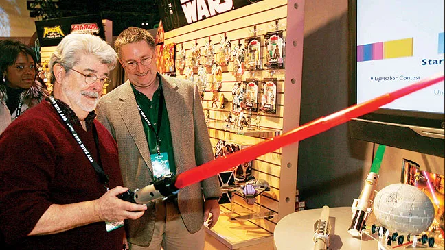

Star Wars: Una Nueva Esperanza narra la historia de Luke Skywalker, un joven que vive en el desértico planeta Tatooine y cuyo destino cambia al encontrar un mensaje oculto en un androide llamado R2-D2. Este mensaje, enviado por la princesa Leia, pide ayuda para derrotar al tiránico Imperio Galáctico. Acompañado por el sabio Obi-Wan Kenobi, el contrabandista Han Solo, el wookiee Chewbacca y el androide C-3PO, Luke se une a la Rebelión en una arriesgada misión para destruir la Estrella de la Muerte, una poderosa estación espacial capaz de aniquilar planetas. En el proceso, descubre el poder de la Fuerza y comienza su camino como Jedi.

La película se estrenó en 1977, en un momento donde el cine de ciencia ficción no era considerado un género comercialmente exitoso. George Lucas, inspirado por mitologías clásicas, westerns, samuráis y seriales de aventuras de los años 30, creó un universo completamente nuevo y rompió con las convenciones narrativas y tecnológicas de la época. Contra todo pronóstico, la película se convirtió en un fenómeno cultural y marcó el inicio de la saga Star Wars, una franquicia que redefiniría la industria del entretenimiento.
Una Nueva Esperanza no solo revolucionó el cine por sus innovadores efectos especiales y su narrativa épica, sino que también cambió la forma en que se producen y comercializan las películas. Fue pionera en el concepto de franquicia, el marketing asociado a películas (merchandising) y el desarrollo de universos cinematográficos. Más allá de lo técnico, logró conectar emocionalmente con millones de personas a través de temas universales como el bien contra el mal, el viaje del héroe y la esperanza. En lo personal, su mayor logro es haber encendido la imaginación de generaciones, demostrando que la fantasía puede tener un enorme poder transformador cuando se cuenta con corazón y visión.
Star Wars: Una Nueva Esperanza fue filmada en múltiples locaciones alrededor del mundo, combinando escenarios naturales y sets construidos en estudios:
- Túnez – Planeta Tatooine
- Inglaterra – Estudios Elstree
- Guatemala – Templo Rebelde (Yavin 4)
- Estados Unidos – Death Valley, California